目次 nu_digital（日本大学デジタル創作研究会）は、日本大学理工学部・芸術学部の学生を中心に構成された、2026組成のデジタルコンテンツの企画・制作を行う学生団体です。また、日本大学の自主創造プロジェクト制度を活用し、大学本部公認のプロジェクトの遂行をしています。
2025年に前身となるプロジェクトで活動を開始し基盤の制作を行い、2026年度からnu_digitalとして活動。ゲームやVRChatワールド、3Dモデル、Web、映像、サウンドなど、幅広いデジタル創作分野で活動を展開し、メンバーそれぞれの専門性や興味を持ち寄り制作に取り組んでいます。
図１ VRCワールド巡り つくって、見せて、比べて、振り返り、またつくる。
私たちが大切にしているのは、「こんなものをつくってみたい」「こんな体験を実現したい」という思いを、実際に手を動かして形にすることです。
活動の出発点にあるのは、メンバー一人ひとりの興味や好奇心です。個人制作を基本としながらも、メンバー同士の会話や交流をきっかけに、共同制作や新しい企画へと発展させています。
また、私たちは作品を外に見せることも大切にしています。自分たちが満足できればそれでよい、というだけではなく、世の中にあるさまざまな作品と並んでも見劣りしない、魅力あるコンテンツを目指しています。
そのためには、実際に作品を形にし、人に触れてもらうことが欠かせません。制作して初めて気づく問題や、他の作品との比較、体験した人の反応から見えてくる課題があります。そうした現実の結果を受け止め、よりよいものへと磨いていく。その積み重ねを大切にしています。
nu_digitalは、そうした挑戦を支える拠点であり、制作を続けるためのペースメーカーでもあります。制作・展示に必要な機材や学習資料、技術的な知識を共有し、個人では得にくい発表や交流の機会をつくっています。
つくって、見せて、比べて、振り返り、またつくる。
この繰り返しを通して、一人ひとりがつくれるものの幅を広げ、「つくりたい」という思いを現実の形にし、より魅力ある作品や体験へと育てていきます。
普段の活動
基私たちの活動は、メンバーそれぞれの個人制作を基本としています。活動の根底にあるのは、作りたいものを実現するために、必要なことを学ぶという考え方です。
最初から技術を学ぶことを目的とするのではなく、「こんなものを作りたい」「あの作品のような表現はどうやって実現するのだろう」といった興味や疑問から、必要な知識や技術をその都度調べ、実際の制作に取り入れています。
団体内でもさまざまな企画が生まれ、その実現に必要なものを一つひとつ作っていきます。制作を進める中で新たな課題に直面し、それを解決する過程で、できることの幅が少しずつ広がっていきます。こうした必要性から生まれる学びの積み重ねを大切にしています。
2026年夏にはワールド制作ハッカソンを開催し、光や水中の表現、謎解き、シェーダーなど、各自が設定したテーマで制作に挑戦しました。学んだ技術を作品に取り入れ、互いの成果を体験する機会となりました。
また、VRChat内にはメンバーが集まれる部室ワールドも制作しており、日々の交流や制作した作品を見せ合う場所として活用しています。
図2 メンバーが3Dモデルやギミックを持ち寄って制作した部室。 VR作品制作から広がる活動
2025年には、VRC World作品「Dimensions Gate」を制作しました。部屋を移ると重力方向が変わる空間を探索する作品で、IVRC 2025メタバース部門において「せきぐちあいみ賞」「入江英嗣賞」を受賞しました。サイエンスアゴラでの現地展示や、その後のVketWinterへの出展など、制作物を学外へ届ける経験も重ねています。また広報でのチラシ制作やホームページも重視しメタバースだけでなく必要なものをどんどん吸収して実際に作り大きくなっていきました。
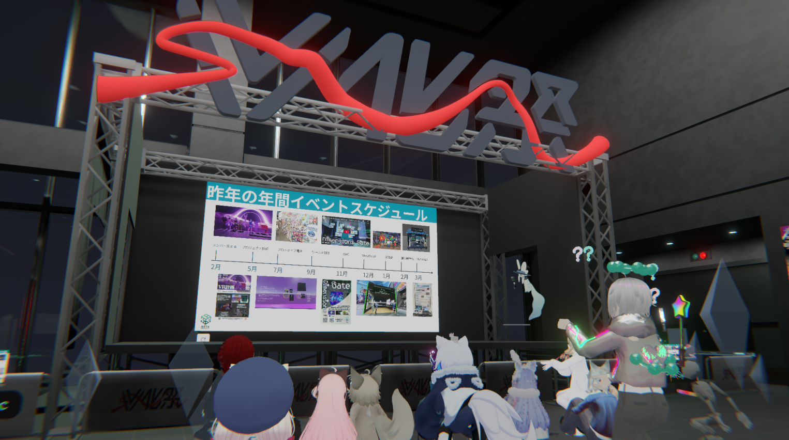
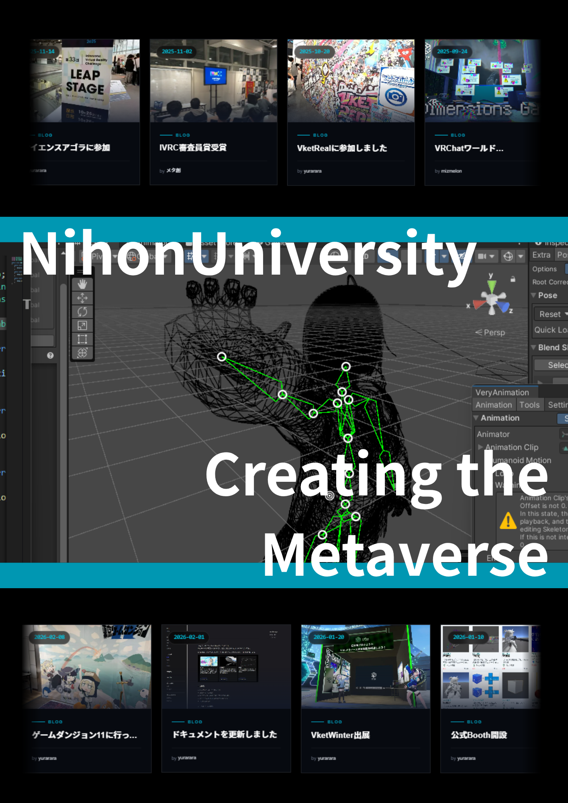
2026年には異分野学会でのポスター発表や、バーチャル文化祭「V化祭」でのブース出展・LT登壇を行いました。3月の大学のプロジェクト報告会では、前年度の活動が優れたプロジェクトとして認定されました。4月には「日本大学デジタル／メタバース創作発展プロジェクト」として採択され、VRChatを中心に培った経験を、デジタル創作全般へ広げています。
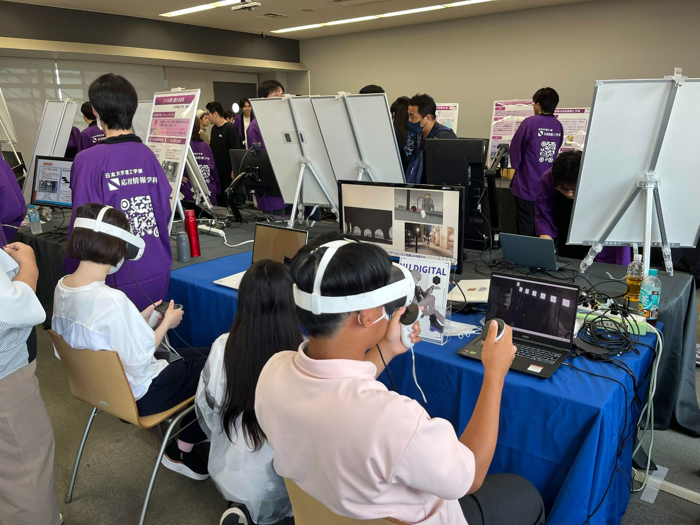
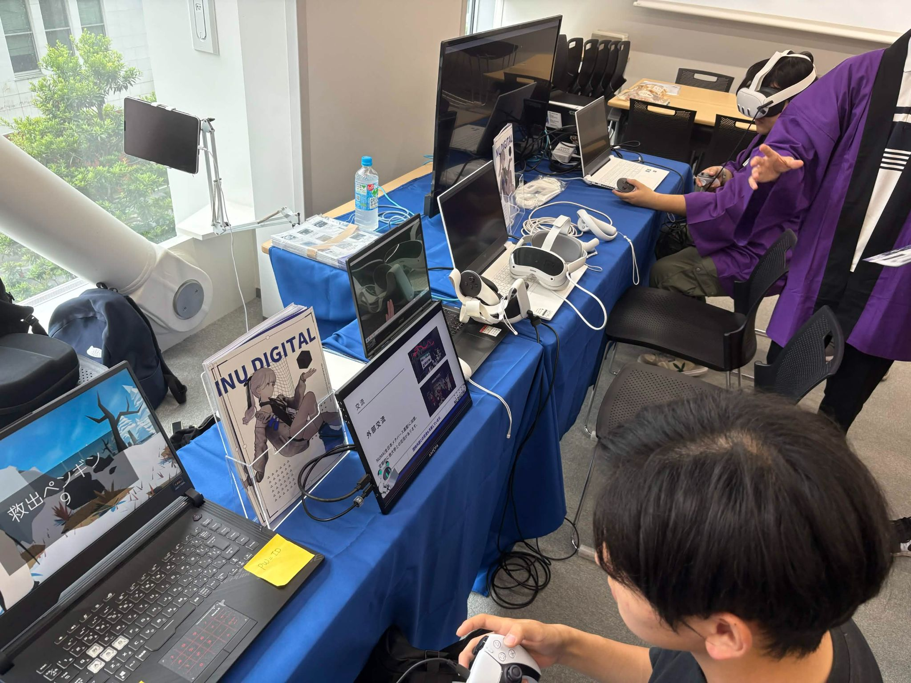
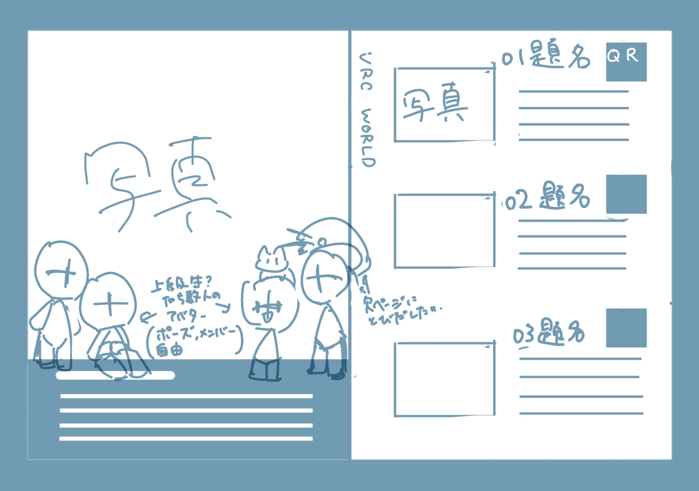
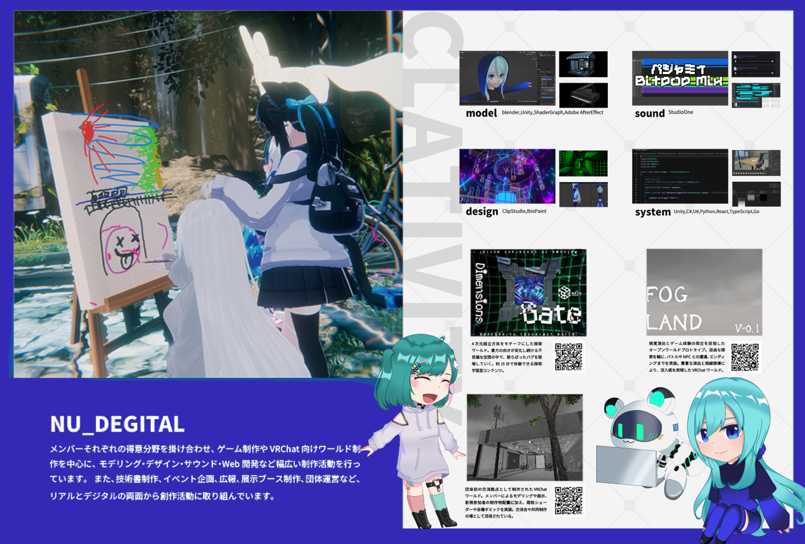
展示の場も増やしてきました。4月の創作体験会、6月の駿河台・8月の船橋オープンキャンパスでは、学生や高校生、保護者の方々に制作物を体験していただきました。NUMA合同講習会でのVRChatワールド制作の解説・実演や、メンバーがIGDAのスカラーシップ採択など、外部に伝え、外部から学ぶ活動にも積極的に取り組んでいます。
2026 体験と、その届け方をつくる
2026年の代表的な作品が「ReCall」です。記憶と連想をたどるVR体験として、風景、映像、音を一つの物語にまとめました。春からの試作をもとに制作と改善を重ね、IVRC 2026メタバース部門で「岸上健人賞」を受賞。9月には富山で開催されたVR学会のIVRC展示にも出展しました。
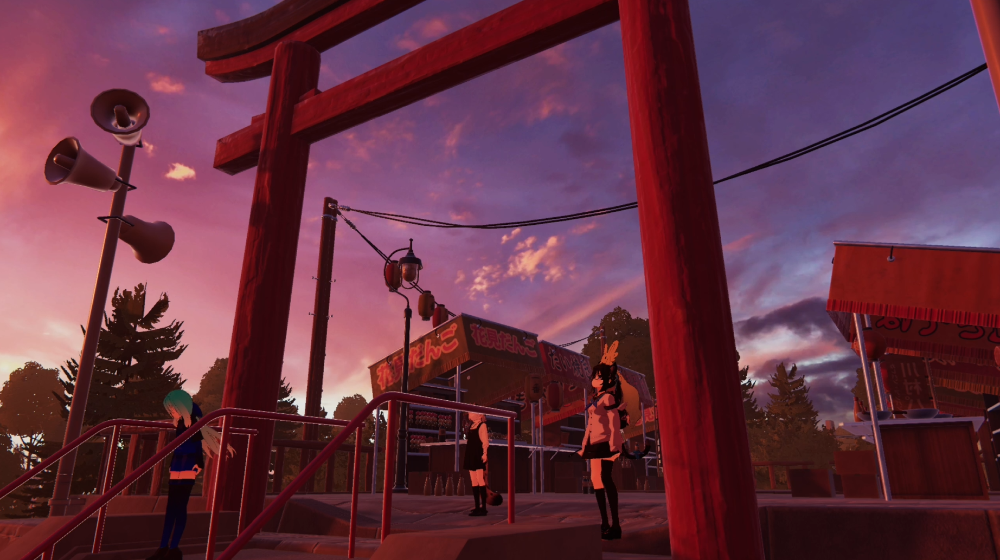
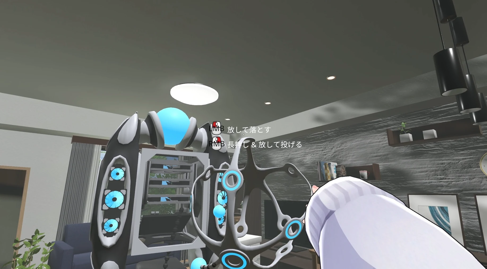
図3 「ReCall」の導入場面。仮想空間没入装置を手に取るところから始まる。 現実の空間を歩いて遊ぶVRにも挑戦しています。「LBE Restaurant Simulator」は、複数人で調理や配膳を行う協力型VR体験のプロトタイプです。UnityとSTYLY NetSyncを用いて制作し、8月にはTIBで発表・試遊展示を行いました。同じ会場にいる人同士が、身体を動かして一つの遊びを共有する体験を試しています。
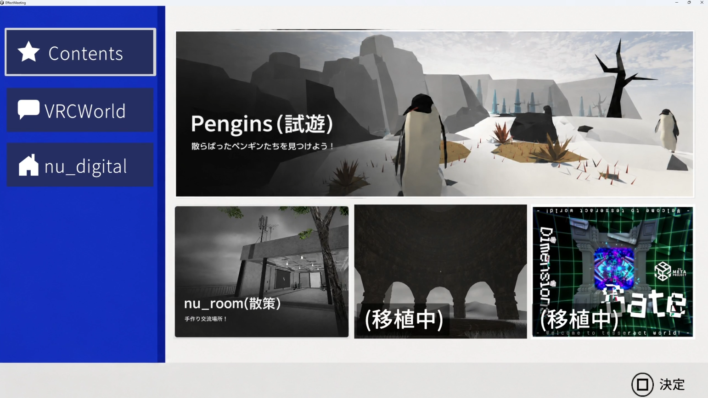
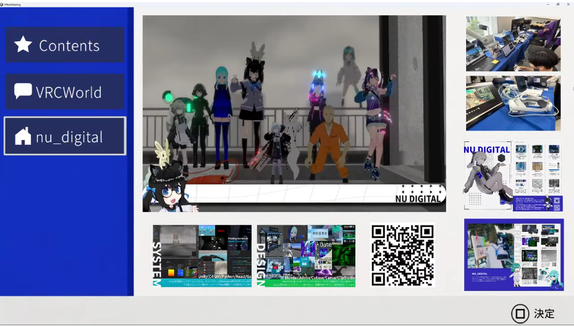
作品の見せ方も、改善しています。オープンキャンパスで作品の切り替えに時間がかかった経験から、複数のゲームを選択・起動できる展示用ゲームランチャーを開発し、7月のIwakenLab 5周年記念イベントで使用しました。VRChatワールドを通常のUnityプロジェクトへ移植し、VR機器がなくてもコントローラーで見学できるようにするなど、展示環境に合わせた工夫も進めています。また、モニターで団体紹介スライドを流したりと。
展示と交流の場を広げる
2026年10月11日の駿河台桜理祭では、初めての学祭出展を行いました。ゲームやVRChatワールドの体験展示に加え、制作コンテンツ紹介映像新規に制作し上映し、体験している人にも、周りで見ている人にも活動が伝わる展示を目指しました。
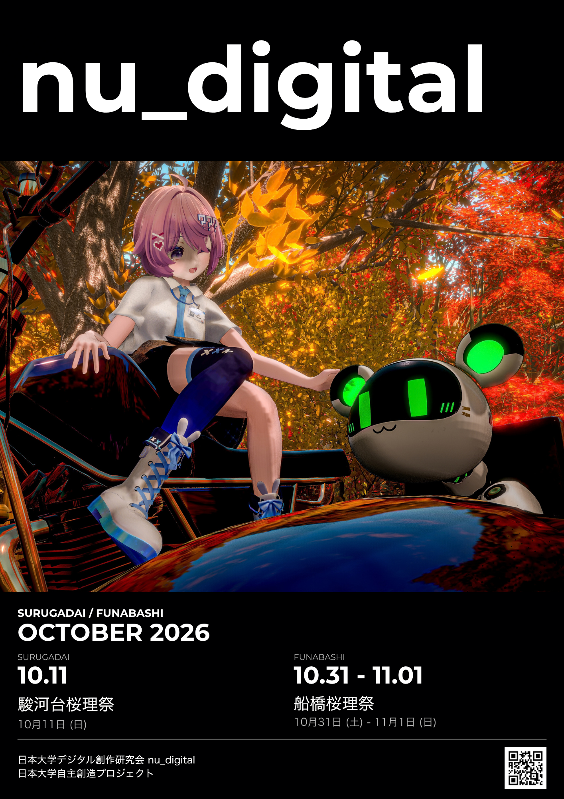
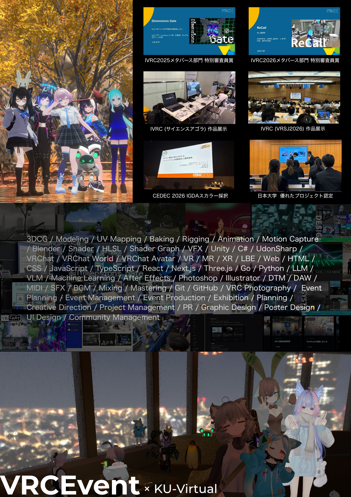
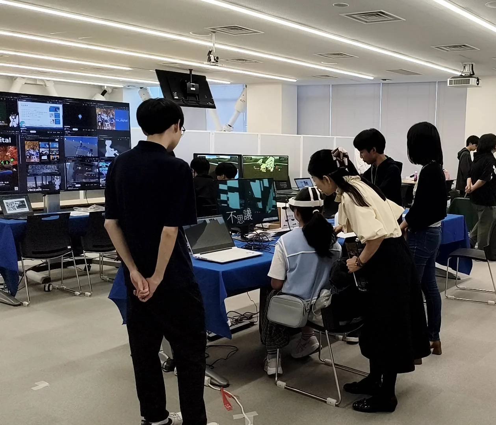
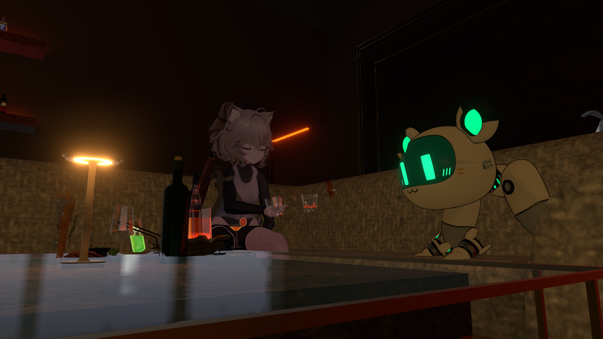
KU-Virtualの方にキャストとして協力していただき、現地の来場者がVRChat内のキャストと会話できる交流体験も実施しました。会場となるワールドは、部屋、家具、BGMなどをメンバーで分担して制作。事前のデモ会で接続や案内の流れを確かめ、作品制作から当日の運営まで取り組みました。
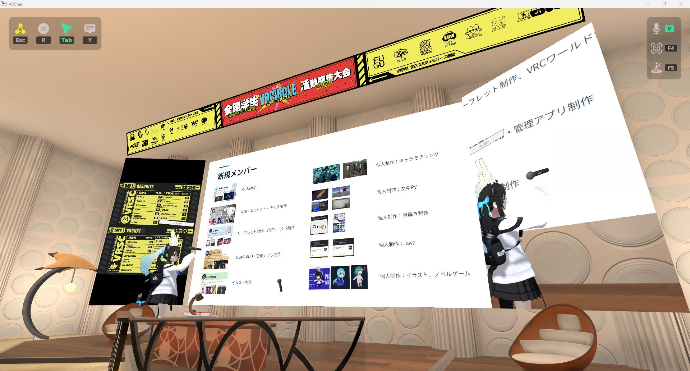
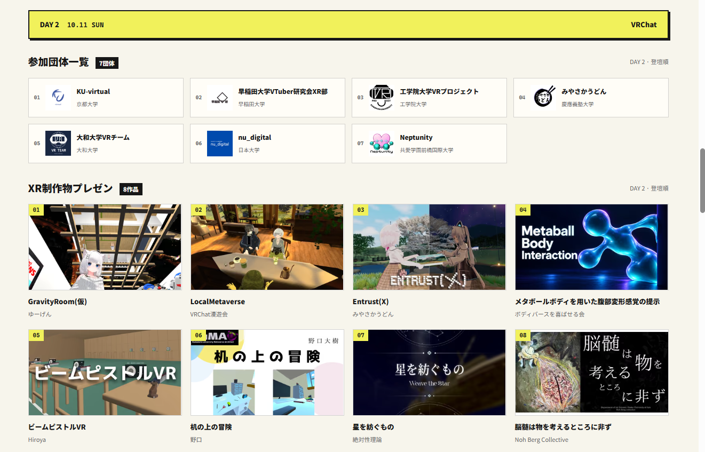
また、全国学生VRサークル活動報告大会では、団体の歩みや理念、文化づくりについて発表し、大会Webサイトの制作にも協力しました。
常に新しいことに挑戦し、作品制作を通して人と繋がり新たな制作に繋げるというのを大事にする。
ゲーム制作、仮想空間制作を主としながらも、広報など作品を前に出して見せていく、人を呼ぶことにも総合的に行っている。メンバーも一つのカテゴリだけでなく複数カテゴリを踏まえてる。色々なものを触り、それをある程度こなす+それで見える視野を広げて、現実的かつ魅力ある見通しを立てれること。
nu_log
本誌には、メンバーそれぞれが実際に手を動かす中で得た知識や経験を持ち寄りました。VRやゲーム、Web、音楽、イラスト、3D、映像など、扱うテーマが幅広いのは、nu_digitalの日々の活動そのものです。
一人ひとりのつくってみたいを形にし、できたものを見せ合い、学びを次につなげる。その積み重ねを、これからも学内のデジタル創作文化として育てていきます。この本が、読者の皆さんにとって、新しい制作を始めたり、別の分野をのぞいてみたりするきっかけになればうれしいです。
活動・作品の最新情報
公式ホームページ：https://nu-digital.github.io/nu_digital/
X：@nu_digital_
協力型クッキングゲーム × LBEをUnityで作る！ yurarara
目の前の食材を掴み、隣の人に渡し、完成した料理をお客さんへ運ぶ。そんな体験を複数人で楽しめるLBEコンテンツとして、STYLY社のOSS「STYLY NetSync」を使い、PICO 4向けの協力型レストランゲームを試作しました。
LBE（Location Based Entertainment）とは、特定の施設や会場で楽しむ体験型エンターテインメントのことです。今回は、同じ現実空間にいる複数人が、自分の足で歩きながら仮想オブジェクトを共有できる点に注目しました。
題材に選んだのは、レストランの厨房です。プレイヤーは注文を確認し、調理、盛り付け、配膳、皿洗いまでを行います。Overcookedのような協力型料理ゲームを、実際に歩き回りながら遊べるようにするイメージです。
自然と役割分担が生まれたり、逆に一人がすべてをこなすワンオペ状態になったりと、プレイヤー同士の身体的な動きがそのまま遊びにつながります。
ただし、協力プレイには食材の位置だけでなく、注文やスコア、ゲームの進行状況も全員で共有する必要があります。ここではSTYLY NetSyncを使った環境構築から、同期処理の実装、制作中につまずいた点までを紹介します。
2．今回のシステム構成
STYLY NetSyncは、Unity用ネットワークパッケージとPython製サーバーで構成され、アバターの位置・姿勢の同期、RPCによる処理の呼び出し、ネットワーク変数による値の共有などができます。Unityのバージョンは6000.3.7f1
今回のゲームでは、通信を担うNetSyncサーバーに加えて、ゲーム進行を管理するOperatorClientと、プレイヤーが利用するPICO 4側のUserClientを用意しました。
3. 掴めると同期されるは別
食材や道具を掴む処理には、UnityのXRGrabInteractableを使用しました。しかし、自分の端末で掴めても、その動きがほかの端末へ自動的に共有されるわけではありません。
位置・回転の同期にはNetSyncObjectを使用し、所有権を持つ端末がTransformを送信します。この所有権は、どの端末が物体の状態を更新するかを決めるものです。
調べると、包丁にはNetSyncObjectが付いていましたが、掴む操作と所有権の取得が結び付いていませんでした。そこでNetworkGrabOwnershipを実装し、掴んだ際に所有権を要求し、取得できなければ操作を解除するようにしました。
4. 同じ食材を全端末でどう見分けるか
次に問題になったのが、食材や料理の生成です。各端末で同じPrefabを生成しても、それらが同一の物体であるとは認識されません。今回の構成では、生成したオブジェクトのIDを全端末で対応付ける仕組みが不足していました。
そこで、固定IDを持つオブジェクトを事前に配置し、必要に応じて貸し出し・返却するオブジェクトプール方式を採用しました。
例えば、生肉を焼く場合は生肉を返却して焼けた肉を貸し出し、料理の提供後は完成料理を返却して汚れた皿を貸し出します。調理や洗浄も、オブジェクトの交換として扱いました。
お客さんは最大9体、食材・料理・皿は合計84個のプールを用意しました。待機中もGameObjectはActiveのまま、描画や当たり判定、操作・物理機能を停止し、ネットワーク上の登録を維持しています。
また、所有権は手を離すたびではなく、プールへの返却時に解放する設計にしました。これにより、生成負荷を抑えながら、物体のID・所有権・使用状態をまとめて管理できるようにしました。
大量にプールされてるオブジェクト 5．遅延と実空間、体験の設計
実際に体験してみると、遅延による操作感の問題が見えてきました。食材を掴んでも手についてこず、少し遅れて動き出すことがあり、調理のような細かい操作を繰り返すゲームでは大きなストレスになります。
今回採用したオブジェクトをプールする方式では、待機中も含めて多数のオブジェクトがネットワーク上に登録されています。これが遅延の原因かはまだ検証できていませんが、同期対象を減らす工夫は必要そうです。例えば、生肉と焼けた肉を別々のオブジェクトにするのではなく、一つのオブジェクトのマテリアルを切り替えるなど、少しずる賢い方法を考えてどんどん同期するオブジェクトを減らしていく必要がありそう。
また、今回は現実空間と仮想の厨房が地続きになったMR寄りのLBE体験でしたが、描画にも問題がありました。現実の人が仮想オブジェクトの前に立っても、オブジェクトが手前に表示されてしまうのです。さらに、小さな子どもに体験してもらった際には、身長の違いによって厨房の台の上が見えないこともありました。こうした問題は、実際に人に体験してもらって初めて気づけた部分です。
一方で、今回の体験ではプレイヤーが一か所に滞留することは少なく、複数人が同じエリアで自然に動き回りながら遊べました。現実の動作に近いため操作も直感的で、複雑な説明を必要としない点も利点です。体験者の入れ替えもしやすく、短時間で多くの人に楽しんでもらえる、高回転なLBEコンテンツとしての可能性も感じました。
厨房の配置 おわりに
今回の制作で大きかったのは、物体の位置を同期することと、ゲームの状態を揃えることを分けて考えるようになった点です。所有権、固定IDのプール、Operatorによる結果の確定を組み合わせ、端末ごとの役割を整理しました。
今後は複数のPICO 4で、受け渡しの操作感、調理要求の競合、途中参加、現実の移動経路を確認していきます。同じ場所にいる人と一緒に働いていると感じられる体験に向けて、通信と空間の両方を調整していきたいと思います。
STYLY NetSync公式リポジトリ：https://github.com/styly-dev/STYLY-NetSync
しゅがと申します。大学一年生です！ 謎解きが好きです！！
今回は、団体内で制作した謎解きゲーム『くいっく！』の制作フローをご紹介します。
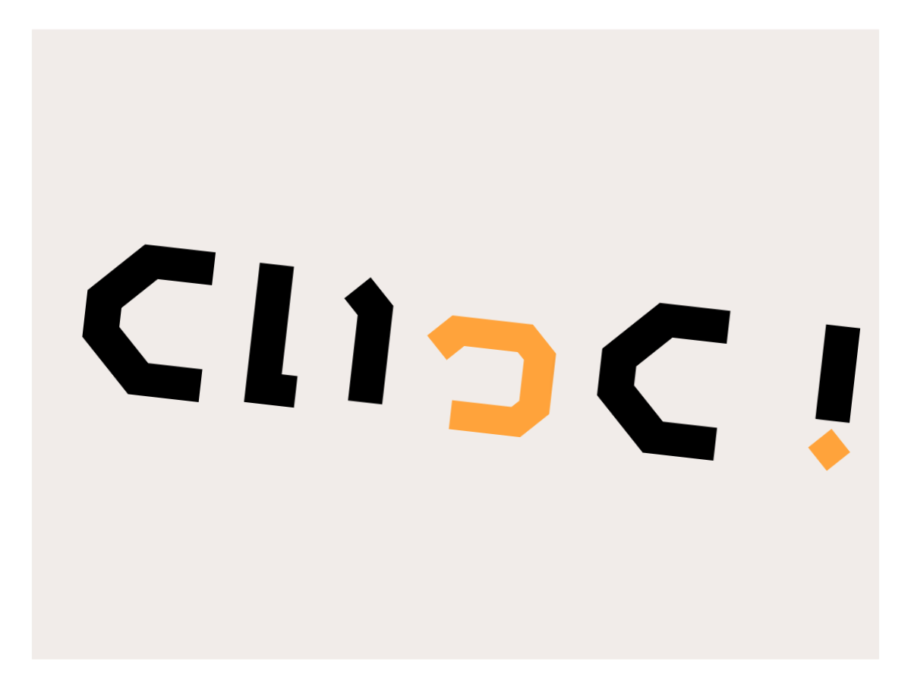
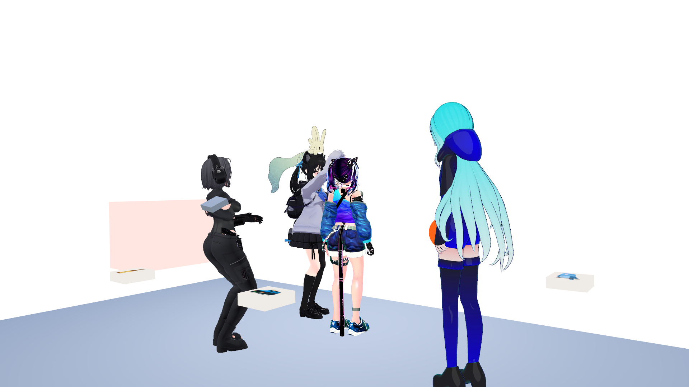
一応、某謎解き制作団体に所属しておりますが、『くいっく！』も、これから記述する内容も、所属している団体とは一切関係がありません。あくまで、謎解きが好きな一個人による制作記録として、参考程度にご覧いただければと思います。
実際に遊んでいただいてから読んでいただくと、より内容を理解しやすいかと思いますので、ぜひ遊んでみてください。
ワールドリンク
https://vrchat.com/home/world/wrld_2b770a84-2da1-4188-bed4-3d4c2471c160/info
さて、作っていきましょう。
今回は、以下のような前提条件がありました。
・一日ハッカソンでの制作
・第一に想定するプレイヤーは団体メンバー
企画を考える
今回は一日ハッカソンでの制作だったため、公演のような大規模な謎解きではなく、小謎を複数組み合わせた、ミニゲームに近い形式の謎解きを制作することにしました。
また、その日の夜には、各自が制作したゲームを持ち寄って遊ぶことになっていました。そのため、1チーム4人程度で遊べる規模を想定しました。
これは単純に、私自身が個人戦よりもチーム戦のほうを好む、という理由もあります。
また、主なプレイヤーとして想定していたのは団体内のメンバーであり、謎解きに慣れていない人も多かったため、難易度は比較的簡単に設定することにしました。
そして、これも私自身の好みなのですが、私はチームでワチャワチャしながら遊ぶ謎解きが好きです。
そのため、ただ座って謎を解くだけではなく、少し身体も動かしながら、制限時間に追われ、プレイヤー同士で慌ただしく協力するような体験を目指しました。
正誤判定について
次に考えなければならなかったのが、VRChat上での正誤判定です。
リアルの謎解きであれば、プレイヤーがスタッフに答えを伝え、スタッフがその場で正誤を判定することができます。
しかし、VRChatのワールド内では、基本的に人間のスタッフが常駐しているわけではありません。そのため、ゲーム側で自動的に正誤を判定する仕組みが必要になります。
最初は、文字を入力できるパネルも検討しました。
しかし、ミニゲームとして考えた場合、謎を解く時間よりも、答えを入力する時間のほうが長くなってしまう可能性があります。
特にVRを装着した状態での文字入力には、1文字ごとに視点を合わせる必要があるなど、独特の操作上のストレスがあります。
せっかく謎を解いたのに、入力操作で余計なストレスを感じてほしくはありませんでした。
そこで今回は、文字入力ではなく、選択問題として回答できる仕組みにすることにしました。
選択問題でどうワチャワチャさせるか
ただ選択肢を選ぶだけでは、今回目指している「ワチャワチャ感」を十分に生み出せません。
そこで、選択肢を選ぶという行為そのものに、もう一つのゲーム性を持たせることにしました。
具体的には、選択肢となるパネルをワールド内のさまざまな場所に配置し、それをプレイヤー自身が探して、所定の枠に入れることで回答できる仕組みを考えました。
これならば、「選択肢を探す人」と「見つけた選択肢を使って回答する人」というように、自然な役割分担が生まれます。
単に謎を解くだけではなく、誰かが探し、誰かが考え、誰かが回答する。そうしたプレイヤー同士の連携によって、チーム戦ならではの慌ただしさや楽しさを生み出せるのではないかと考えました。
……と、ここまではよかったのですが、後になって同期の問題が発生し、この仕組みを実現することは難しいと判明しました。
ミニゲームとしての謎解き
では、実際にどのような謎を用意するか。
ミニゲームとして成立させるのであれば、複雑なロジックを使って一つの大謎を解かせるよりも、比較的短時間で解答でき、複数の問題を通して一つの法則に気付かせる形式のほうが適しているのではないかと考えました。
そこで、「これまでの答え」を一覧で見たときに、そこにある法則が直感的に分かるような仕組みとして、「しりとり」を採用することにしました。
実装
さて、実装です。
ここは、とにかく頑張ればなんとかなります。
……とはいえ、実際に必要だったものを大きく分けると、以下の2つだけでした。
・謎20問
・VRC無いのギミック
チーム戦という形式上、プレイヤーごとに問題の進行がずれてしまうと成立しないため、問題の進行状況については同期させる必要がありました。
ギミック
ほぼAIです。
ありがとう、AIくん。
もはや私がギミックについて語る資格などありません。実装したいことを投げると、コードになって 返ってきます。うれしい。もし、実装したい事が文章で伝えることが難しそうであれば、欲しい要素を分解し、一つ一つでコードを作ってもらい合成することで、割とスムーズに制作ができます。
謎解き
今回は、答えに対する制約が「しりとり」のみだったため、実装上はそこまで大きな問題にはなりませんでした。すみません。頑張って作る。頑張ってひねり出しましょう。
反省
ここからは、実際に制作してみて感じた反省点について書きます。
まず、問題数についてです。
今回は20問用意しましたが、実際に遊んでみると、少し多かったかもしれません。ハッカソンという制作時間の制約だけでなく、プレイヤー側の体験としても、もう少し問題数を絞ったほうがテンポよく遊べたように思います。
そして、今回最も大きな反省点だったのが、チーム戦としての役割分担を十分に設計できなかったことです。
当初は、プレイヤーごとに異なる役割を持たせ、互いに協力しなければ先へ進めないような構成を目指していました。
しかし実際には、謎を解けるプレイヤーが解けていないプレイヤーを待つ時間が多く発生してしまいました。
これは今回に限らず、謎解きにおけるチーム戦全般に関わる難しさなのかもしれません。
一人が答えを導き出せる状況では、そのプレイヤーに他のメンバーが追いつくまで待ってもらう必要があります。
しかし、今回は制限時間のあるゲームでした。
「全員が理解するまで待つ」という時間は、そのままチーム全体のロスになってしまいます。一方で、待たずに先へ進んでしまえば、今度は一部のプレイヤーがゲームに参加できない時間が生まれてしまいます。
このバランスを、今回はうまく設計することができませんでした。
個人的にも、誰か一人が正しい答えを導き出せないことでチーム全体が停滞し、結果としてタイムに影響してしまうという構造には、少し課題を感じました。
チーム戦にするのであれば、単に「複数人で遊べる」だけではなく、複数人で遊ぶことそのものに意味がある設計にする必要があります。
そう考えると、今回の『くいっく！』は、無理にチーム戦にするよりも、個人戦として設計したほうが適していたのかもしれません。
個人戦であれば、問題の進行を各プレイヤーごとに管理することもできますし、ローカルで処理できる範囲も広がります。
何より、今回の制作を通して、「チームで遊ばせたい」という企画上の意図と、「実際にチームで遊んで楽しい」ゲーム設計は、必ずしも同じではないということを実感しました。
１.まずは構図を勉強しようね！
はい、はじめまして。ぽてぃといいます。VRCで写真をとってます。同時に、セイランちゃんを愛でている人でもあります。（最近ルリエちゃんを手に入れたのはナイショ）
写真を撮るときに重要なことがあって、構図を知っておくことです。
なんでもいいですよ。本当に。
アニメでもゲームでも。何かまねできるものを探して撮ってください。
↑これとかは毛工有名なゲームのキャラクターPVからポーズを真似して撮ってみてます 自分の持っているものでなんとなく再現してみるんです。それで、なんか気に入らない部分ってあると思うんです。そこを自分なりに修正していくんです。そうすると、オリジナリティの練習になります。
2.自分らしさ出したくない？
はい、１をとりあえず自由にやってください。なんだっていいですよ。困ったらほかのツイッターの人の写真をパクるでもいいですし。あ、でも世間に出すときはパクりだとばれないように、ね？
まぁ、そんな１のフェーズを終わらせたら、自分なりの写真を作りましょう。
ポーズだけ持ってきてもいいし、こういうのどうかなとかそういうのでもいいです。
1を何回かやると感覚をつかめるようになってきて色々とアイデアが出てきますよ。
まぁ、本当になんだっていいんです。
といっても分かりにくいと思いますので、また例を貼りましょう。
今回は何を真似したのかも明言します。丸パクりってわけではないので。
『ビターチョコデコレーション』という曲があるんですけど、それのカバーを聞いているときにこのポーズいいなってなったんですよ。それで撮った写真があります。
写真だけ見ると本当にオリジナルみたいに見えて、自分らしさが出てる感じですよ。
でも、私はただそれのオマージュだけじゃあつまらないと思いまして、自分でストーリーを作ったんですね。
『自分の照らし方をわからない人がテレビという耀くひとの舞台を利用して自分を照らす』というね。
文芸学科なので、そういうの考えるの得意なんですけど、読んでる方の中には苦手な方もいるでしょう。簡単なものでいいんですよ。歩いてたら転けそうになってるとか、ちょい悪い子がバイトの裏口で隠れてタバコしてるだとか。日常でこの人いいなとときめいた人を投影したっていい。やり方はたくさんあります。ぜひ、オマージュに一味足してあなたらしさを全開にしてください。
あ、そうそう。ツールの用意はちゃんとしましょうね。最低でもAvatarPoseSystemというアイテムは購入しておきましょう。自分の体を固定しながら手を動かせる超人類の方はそれでもかまいませんが……
↑そのカバー曲は外側じゃなくてこうやって丸まるような寝かたになってまして…… ３.ふん、フォトグラファーめ。好きにしろ。（国民的アニメの木管楽器風）
もう後は好きに撮ってください。
なんか見て学ぶ方が速そうなので色々貼っておきます。決して描くのが面倒くさいわけではないですよ。はい。
何を置いておくのがいいのが最適か分からないので普通に撮ったものと、
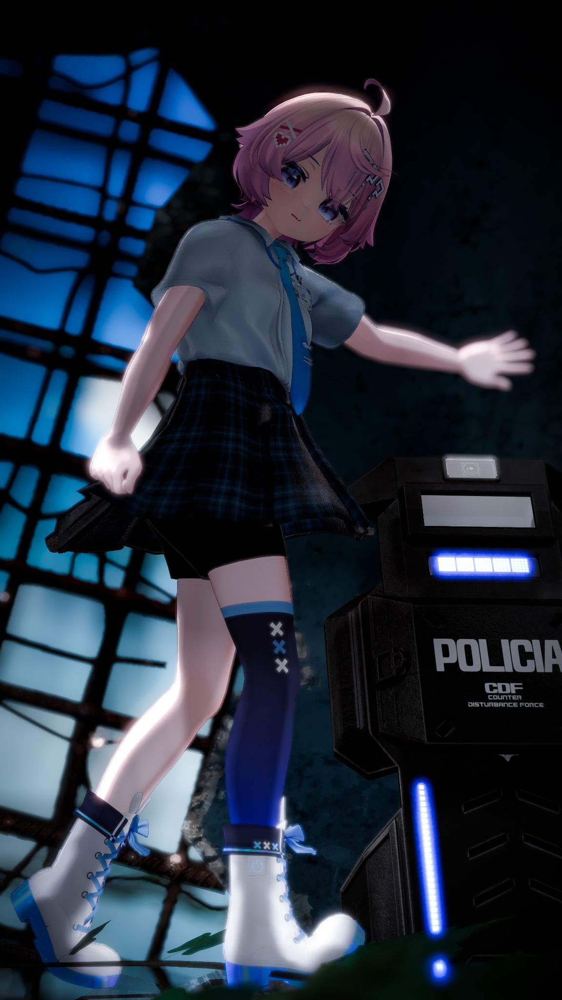
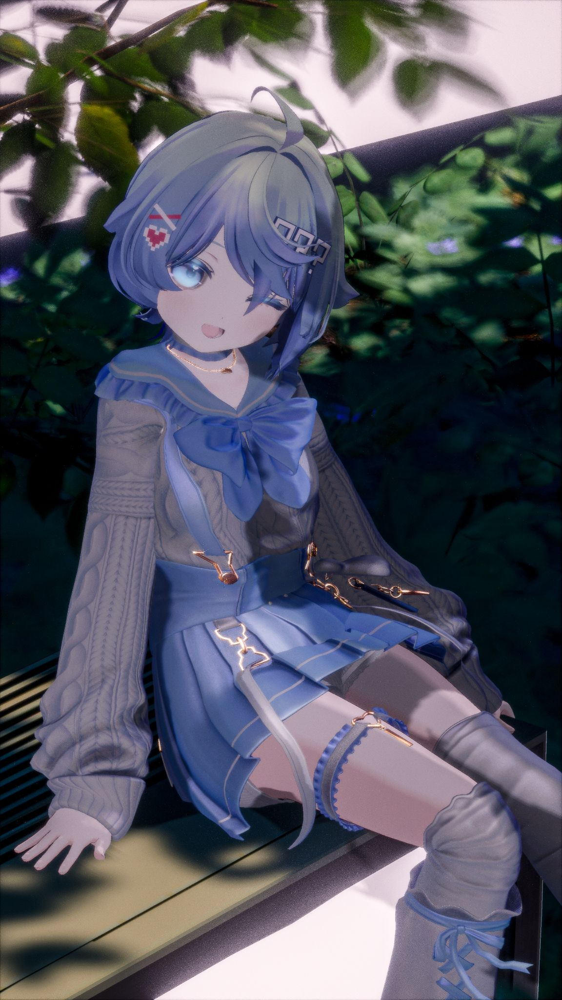
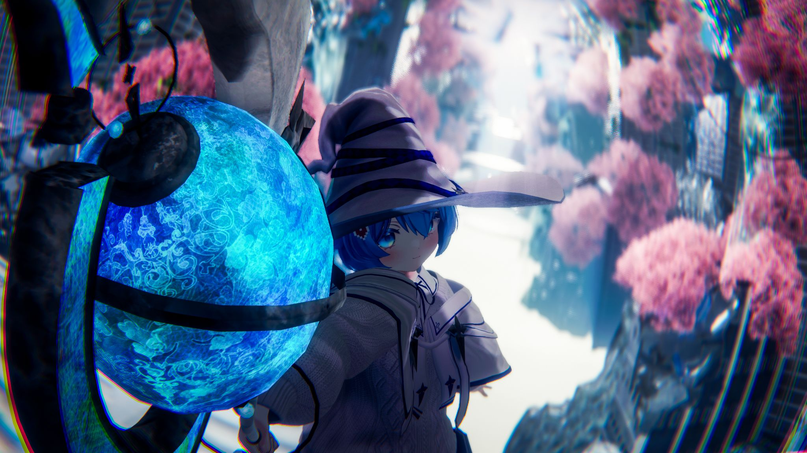
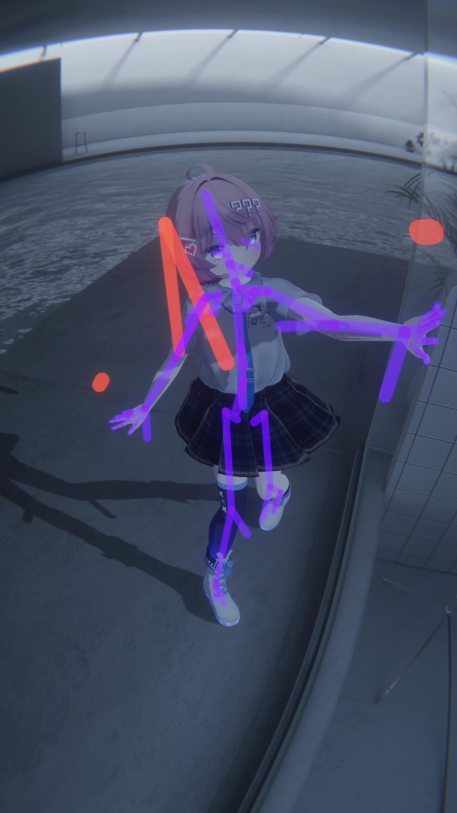
↑こういうボーンとか置いておいた方が参考になる？ 以前から開発していたMinecraftというゲームのMODを題材に、Forge・Fabric・NeoForge（これらはすべてローダーと呼ばれるMODを読み込むための大きな道具のようなものです）の3つへ対応するマルチローダーを作成した記録について紹介します。
そこで、もともとNeoForge1.21.1向けに開発していた「Manaita++」を使いながら、複数ローダーへ対応できる構成を作っていきました
2. 始めたきっかけ
MinecraftのMODは基本的に、MODローダーごとに作り方が大きく異なり、それぞれ個別のAPI（開発するうえでの補助機能）を持ちます。単に、3つのローダーそれぞれに対して、別のプロジェクトを作成して簡単に済ませることもできます。
ただし、この方法では同じ処理を何度も書くことになり、非常に面倒です。そこで、一つのプロジェクトの中に共通部分を用意し、ローダーごとに違う部分だけを分ける構成にしてみることにしました。環境はInteliJ IDEA, JavaとGradleです。
3. 共通部分と固有部分を分ける
実際にやってみると、すべての処理を共通化する必要はないことに気が付きました。たとえば、ItemStackやPlayer、 LevelなどのMInecraft本体のクラスのみを使う処理であれば、Commonコードとして書ける場合が多かったです。
一方で、アイテムの登録や、Eventの登録、ネットワーク通信などは、各ローダーごとに違いがあります。そこで、プロジェクトを大きく図のように分けました。
考え方としては、できるだけMinecraft本体の処理をCommonに書き、RegistryやEvent系は各々のローダーに任せる形です
4. 頭を抱えた場所
方針が決まり、いざ実装しようとなった時、立ちはだかったのは、やはり各ローダーごとで違うRegistryとEvent、強いては特にRegistry関係でした。
各々でそれぞれの登録方法を使って個別に書く方法も考えたのですが、それではほかの場所で使うことができません。そして何度も似たようなことを書くのは非常に面倒です。
そこで、JavaにあるServicePlatform (javaj.lang.ServicePlatform)という機能を使い、Common側には共通のインターフェイスを用意し、各ローダーでその中身を実装するという形をとりました。また、CompatHolderを作成し、そこに各ローダーで登録したオブジェクトを格納することで、
アイテムクラス実装 -> アイテム登録 -> アイテム参照のすべてを共通化させることができました。
ローダーごとの差が大きい部分はあえて各々のローダーに任せることで、コードの保守性、視認性を保つことができました。
5. 改善したいこと
今回実装したのはRegistry、 Eventの共通処理だけであり、network、 Datagen、これは違うかもしれませんがバージョン間の差異はまだ未実装です。これから先、より大きなMODを作ることになった際、現在のテンプレートでは補完しきれない場面が必ず訪れると思います。なので、いつか必要になった時に、そこを改善したいと思います。
6. さいごに
今回マルチローダー構成を作ってみて、最も大きかったのは単に「複数のローダーに対応できる環境ができた」という点だけではありませんでした。
他にも、「そのコード/クラスをどこに配置するべきなのか」を深く考えることができた、という点もあります。
この処理は「Minecraft本体のみの機能なのか」それとも「ローダー側で個別に書かなければならないのか」。
そういったことを考えながら、黒い画面とにらめっこをする時間が増えたことで、MOD全体のファイル構成について以前よりも考えるようになったと思います。
一方で、マルチローダー化すれば必ず開発がスムースになるとは限りません。対応するローダー3倍 = 仕様変更の量も3倍、さらにはgradle（最後にMODを完成させるためのツールのようなもの）の設定などもかなり複雑になります。
それでも、「全てのローダーで1から全部書くよりは面倒ではない」と感じています。今後も実際の開発で欲しいと思ったものは作っていきたいと思います。そして使っていきたいと思います。
Raspberry PiでWebサービスをリリース！ iwa
はじめに：想定読者と経緯
余剰のPCでWebサービスをリリースし、長期的な金銭的運用コストを抑えたい方向けに書いてみました。
まず、Webサービスのリリース方法としては、AWSやGCP用いるのがある程度メジャーな手段ではあるものの、本格的なWebサービスにしてこうとすると将来的に大量のアクセスが集まった時、継続的に多くの資金が溶けていってしまうのは大変怖い。私は個人的な買い物でもサブスク型より買い切り型の方が精神的に落ち着く性格であるのと、加えて継続的に色んな種類のWebサービスを開発していく予定でいるので、ラズパイを使って自宅でWebサーバーを構築してみた。
物理的なリリース環境の構成
・Raspberry Pi 5 RAM 8GB MicroSDカード128GB 1台(将来的にはNVMe256GBを予定)
・個人的な好みでゲーミングファン付きのRaspberry Piのケースを使用
・一戸建てなので、自室のルーターはAPモードにして、ホームゲートウェイ(NEC製のATERM)に論理的に直結 (マンションの場合はポート開放で一苦労必要らしい)
ソフト面でのリリース環境の構成
・Ubuntu Server 26.04 (64-bit)
・Docker Compose
・Nginx
・Certbot
・CloudFlare
真白な知見とラズパイの状態から、150時間かけて図の構成の自宅サーバーが構築できました。執筆時点で公開できているのは、私とNCCの紹介ホームページ( iwavr.com , ncc.place )のみの規模なので、リバースプロキシまで用意する必要は無いのですが、今後多くのサイトを追加していくのが前提にあったので、CI/CDを行うべく、後ろにDockerを置くシステム構成にしました。
これで自分が働いていなくても、Raspberry Pi君が1日中あくせくと頑張って働いてくれてる姿が見れるので、とても癒されます。
ただ、現状の脆弱性として、この1台のRaspberry Piが死んでしまうと、Webサーバー全体がダウンしてしまうという弱点があるので、のちほど解決策を述べていきたいと思います。
方法
ChatGPTやCloudeなどの賢いAIに3000円以上の課金をし、以下の内容をプロンプトに示して構築方法について教えてもらうことで、自身にあった理解度と目的でスムーズに構築できるかと思います。
・ご自身の目的(インフラの勉強がしたいのかコスト削減をしたいのか、その両方なのか等)
・構築したいWebサービスのアーキテクチャやサービスの詳細な内容
・参考にしたいシステム図(この内容に載せているシステム図でも可)
・ご自身のインフラ構築に対する理解度(できるだけ詳細に書く)
・自宅の回線の契約内容やルーターの型番や配置などのネットワーク情報
・用意できる予算
・「プロンプトに含まれる前提情報の不足によって回答の結論や具体性が変わる場合は、回答前に私に必ず質問をしてください」といった旨のプロンプト
・「大学のカリキュラムのような形式で、何回ものチャットにわたって0から体系的に丁寧に分かりやすく構築方法を解説してください」といった旨のプロンプト
上記の方法で問題無く進めると思います。最近ではAIエージェントに作業自体も任せる手法が一般的になりつつありますが、私はインフラの勉強も目的として兼ねていた為、作業は自身で進めていきました。その作業を進める前に前提として少し知っておくと良いかもという知見も、せっかく0からの未経験の状態で構築した身なのでそこから得られた学びも述べてつつ、実際に行ったサーバー構築の大まかな流れについても解説したいと思います。
Tips
まず、サーバー構築で感じた全体としての感想としては、自宅でのサーバー構築とは、セキュリティーの構築であるということでした。単純に自宅にWebサーバーを置いて、外から通信できるように自宅のルーターのポート開放すること自体は、AIと相談しながらであれば誰でも1日あれば簡単にできそうでした。ただ、それによってもたらされる確実に分かることは、ただのハッキングの的以外の何物でもないということでした。実際に公開していたサーバーのアクセスログを確認してみると、平均して1時間おきに新しいハッキングBotが現れ、1度に大量のハッキングをしかけてきていたのが分かりました。ハッキング目的のアクセス数は1週間あたり5000件以上ありました。一方で一般ユーザーによるアクセス人数は19名だったのですが。。。さらに、単にサーバーを置くだけでは、 http://106.137.15.172 といった形で検索が難しい上、セキュアな通信ができないhttp通信のみなので、現代のスマホのブラウザだと弾かれて見ることさえできません。
その対策として、公開範囲を絞ったり、例外のアクセスをファイアーウォールで弾いたり、権威DNSからドメインを取得したり、TLSサーバー証明書を取得したりする必要がありました。それらが自宅からのサーバー構築の敷居を高くしている要因だったと実感しました。
サーバー構築の大まかな流れ
・Windowsで開発したWebアプリをビルド
・ビルド済みファイルをRaspberry PiにあるNginxに配置
・Raspberry PiのローカルIPv4アドレスを手動設定することで固定化
・LAN内でローカルIPv4アドレス( http://192.168.0.88 等)でWebアプリを確認
・UFWとDocker firewallでファイアーウォールを設定
・WindowsPCとRaspberry間のSSH接続をパスワード方式から公開鍵方式に変更
・LAN内の上位ルーターへアクセスし、ルーターのグローバルIPv4アドレス(TCP 80: HTTP) とRaspberry PiのローカルIPアドレスを紐づけることで、ポート開放を行う
・スマホのモバイル回線からルーターのグローバルIPv4アドレス( http://106.137.15.172 等)でWebアプリを確認
・CloudFlareのDNSでドメインとルーターのグローバルIPv4アドレスを紐づけ
・Raspberry Pi上でDDNS更新スクリプトを自作し、動的IPであるルーターのグローバルIPv4アドレスをCloudFlareのドメインへ自動で紐づけられるようにする
・スマホのモバイル回線から http://ドメイン名 でWebアプリを確認
・Certbotを用いて認証局からサーバー証明書を自動取得し、HTTPS通信を可能にする
・スマホのモバイル回線から https://ドメイン名 でWebアプリを確認
最後に：Webシステムのさらなる改善模索案
これまでで示してきたWebシステムでは、すべての処理がRaspberry Pi 1台に集中しており、負荷に耐えられなくなった時や、Webサイトの改修時に一時的に外部からアクセスできなくなってしまう弱点を抱えていた。そのため、今後の拡張性と安定性を考慮し、現在はRaspberry Piを3台に増やし、Kubernetesを用いた高可用性クラスターの環境にすべく、以下の図のような構成のWebシステムの土台の構築作業に取り掛かっています。
AIエージェントとは何ぞやAIの？話でよく聞くLLMとは何が違うのか？―前置きではこれらの疑問を解消してから本題に入っていきます。
まずLLMとは、大規模言語モデル（Large Language Modelとか言うらしい）の略称です。膨大な言語データを用いた深層学習によって、文脈を踏まえた文章生成や質問への回答を行うことができます。しかし、LLM単体では文章を生成できても、その内容に基づいて外部のプログラムを実行したり、パソコン内のファイルを操作したりすることはできません。そこで、LLMと外部のツールを組み合わせ、ユーザーの指示に応じて処理を実行できるようにしたものが今回の主題でもある、AIエージェントです。例えば、LLMに「ファイルを整理して」と指示しても、整理の手順を文章で説明することはできますが、実際にファイルを移動するには別の仕組みが必要になります。一方、ファイル操作用のツールを備えたAIエージェントであれば、LLMが出してきた指示を解釈し、必要なツールを利用して実際に整理を行うことができます。つまり、LLMが「何をするべきか」を考える頭脳であるのに対し、AIエージェントは、その判断を外部のツールによる具体的な処理につなげる神経のような仕組みを持っている、ということです。
今回は、AIエージェントの仕組みを理解し、LLMと外部ツールの連携により実現できる機能を体験するため、簡単な計算ツールとWebカメラを組み合わせたプログラムの制作に挑戦しました。特に、Webカメラというハードウェアとの連携や、画像認識を通じた情報の取得ができたら面白そうだと思い、実装を目指してみました。
準備したもの
今回、お手軽にAIエージェントを作ろうということで、google colabを用いました。使用言語はPythonです。インポートしたライブラリ・モジュールは以下の通りです。
・google.colab.ai：Google Colab上でAIの機能を利用するためのもの。
・re：文字列から特定のパターンを検索する正規表現を扱うもの。
・IPython：ノートブック上での表示や実行環境に関する機能を扱うもの。
・google.colab.output：Colabの出力画面と連携するためのもの。
・base64：画像などのデータを文字列形式に変換するためのもの。
・PIL.Image：画像データを読み込み、処理するためのもの。
実 践
何ができるようになればAIエージェントを実装したと言えるでしょうか？前置きで述べたように、AIエージェントはユーザーから入力された文章と、それまでの会話履歴をLLMに渡すことで、文脈に応じた応答を生成します。これに加え、今回はツールを利用するAIエージェントに挑戦するため、LLMからの応答をそのままユーザーに返すだけでなく、その内容に応じて外部のプログラムを実行する処理を追加する必要があります。
上記を踏まえ、今回のプログラムでは、以下のような流れを採用しました。
・ユーザーが自然言語で指示を入力します。
・それまでの会話履歴とユーザーの指示をLLMに渡します。本プログラムでは会話履歴を配列に格納していきます。
・LLMが指示の内容を解釈し、必要に応じてツールの呼び出しを表す文章を生成します。
・プログラムがLLMの応答を解析し、対応するツールを実行します。
・ツールの実行結果を会話履歴に追加し、必要に応じてLLMによる次の処理につなげていきます。
・最終的な回答をユーザーに表示します。
この流れに則り簡単な計算ツールを実装後、webカメラで特定のツール（記号）を読み取ると、そのツールに関連付けた演算子として認識し、数値の計算をしてユーザに返してくれるエージェントの制作を試みました。
計算ツール
エージェントに利用させるツールとして、f1とf2という2つの関数を定義しました（図1参照）。f1は2つの数値を受け取り、それらを加算した結果を整数に変換して返す関数です。一方、f2は2つの数値を受け取り、1つ目の数値を2つ目の数値で除算し、その結果を整数に変換して返す関数です。ただし、0による除算は実行できないため、2つ目の数値が0であった場合はINVALIDという文字列を返すようにしました。
図1 エージェントに利用させるツール カメラツール
カメラツールの設計では、ユーザーの指示に応じてWebカメラを起動し、画像を取得するという流れを考えました。そのために、ユーザーからの指示を受けたLLMの応答を解析し、必要に応じて処理を分岐させる仕組みを計画しました。
具体的なプログラムの構成としては、まず、画像撮影が必要な場合にはtake_photo()を呼び出し、撮影された画像の保存先を取得するようにしました。その後、計算が必要な場合には、加算であればf1、除算であればf2を実行するようにしました。また、これらの処理結果をmessagesという会話履歴に追加することで、エージェントがそれまでの処理内容を踏まえて次の応答を生成できるようにしました（図2参照）。
このように、LLMによる指示の解釈、計算ツールの実行、画像の取得を一連の処理として組み合わせることを目指しました。しかし、Google Colab上でのWebカメラの起動や画像取得後の連携がうまくいかず、最終的に画像から数式を読み取り、計算結果を返す機能については完成に至りませんでした。
図2 カメラツール実装と実行時のUI 振り返りと今後の発展とか
今回は、Webカメラで撮影した記号や数式を認識し、対応する計算ツールを用いて結果を返すAIエージェントの制作を目指しました。Webカメラを採用したのは、文字入力だけでなく、現実世界の情報を直接取り込む仕組みを実現したかったためです。
しかし、Google Colabではクラウド上でプログラムが実行されるためか、Webカメラとの連携がうまくいかず、完成には至りませんでした。今後は開発環境を変更し、画像認識と計算処理の連携を実現していきたいと考えています。さらに、この技術を発展させれば、講義で配布されたプリントをカメラに映すだけで、問題を解くためのヒントを提示するシステムなども実現できるのではないかと思いました。資料をわざわざ写真で撮ったりPDF化する手間を省き、より直感的かつ効率的にAIを活用していけるのではないか―きっと学生お助けツールの一つになれると考えています。
Blender勢のためのUnity連携ガイド yoshi_pawn
1. はじめに
大学でのゲーム制作では、Blenderで簡単な3Dモデルを制作したり、Unityのチュートリアルを通して基本操作を学んだりする機会が多くあります。しかし、実際のゲーム制作では、モデルを作るだけでなく、Unity側でゲームの基盤やデザインを構築し、それに合わせてBlenderでモデリングを行い、UV展開や法線の調整、テクスチャの設定などを経て、Unityで使用できる形式への変換が必要です。さらに、共同制作では、制作したデータをほかのメンバーが問題なく利用できる状態に整え、UnityPackageなどを用いて受け渡すことも重要です。
Blender上では正常に見えるモデルでも、Unityにインポートすると角度や大きさが変わったり、テクスチャが反映されなかったり、一部の面が表示されなくなったりすることがあります。本稿では、実際の制作で問題になりやすい点を踏まえ、BlenderからUnityへ3Dモデルを移行する際の注意事項と対処方法について解説していきます。
2. 座標系とモデルの回転
BlenderからUnityへモデルを移行する際、まず注意したいのが座標系の違いです。BlenderではZ軸が高さ方向であるのに対し、UnityではY軸が高さ方向となっています。そのため、FBX形式でエクスポートすると、モデルの向きが変化し、UnityのInspectorで意図しない回転角度が表示される場合があります。
この問題を防ぐには、FBXのエクスポート設定で座標軸の変換を適切に設定することが重要です。Blenderでは一般的に、前方を「-Z Forward」、上方向を「Y Up」に設定することで、Unityとの座標系の違いに対応できます。
また、Blender側でオブジェクトをX軸周りに90度回転させて調整する方法もありますが、エクスポート時の軸変換と回転操作が重複すると、Unity側でさらに回転が加わる可能性があります。したがって、どの段階で回転を調整するかを統一しておくことが必要です。
特に、アーマチュアを使用したモデルでは注意が必要です。メッシュとアーマチュアを個別に回転させると、親子関係やボーンの変換に影響し、アニメーションが正常に動作しなくなる場合があります。メッシュとアーマチュアの関係を確認し、必要に応じて回転を適用したうえで、Unityにインポートして動作を検証することが重要です。
3. スケールの調整
モデルの大きさも、BlenderとUnityの間で問題になりやすい要素です。Blenderでは適切な大きさに見えていても、Unityにインポートすると極端に大きくなったり、小さくなったりすることがあります。特にアーマチュアを使用したモデルでは、InspectorのScaleが100になってしまいます。
原因の一つとして、オブジェクトに設定されたスケールや、FBXのエクスポート時に行われる単位・スケール変換が挙げられます。対策として、Blenderのオブジェクトモードで Ctrl + A を押し、「スケール」を適用する方法があります。これにより、見た目の大きさを維持しながら、オブジェクトのスケール値を基本的に1に揃えられます。
ただし、アーマチュアを使用する場合は、スケールの適用によってボーンやアニメーションに影響が出る可能性があるため、適用前後でモデルの変形を確認する必要があります。また、FBXのエクスポート設定にあるスケール関連の項目も確認し、チーム内で設定を統一しておくとよいでしょう。
Unityでは一般的に1 Unity Unitを1メートルとして扱うため、Blender側でもゲーム内での実寸を意識して制作すると、キャラクターや建物、小物などの大きさを揃えやすくなります。
4. 面の向きと法線
Unityにモデルをインポートした際、一部の面が透明になったように見えたり、特定の方向から見ると面が表示されなかったりする場合があります。このような問題では、面の向きや法線を確認する必要があります。
ポリゴンには表と裏があり、Unityの一般的なマテリアルでは裏面が描画されないことが多くあります。そのため、面の向きが反転していると、Blenderでは気づかなかった問題がUnity上で発生する場合があります。
Blenderでは、ビューポートの「ビューオーバーレイ」から「面の向き」を有効にすることで、面の表裏を確認できます。一般的に、青色が表面、赤色が裏面を示します。意図せず裏向きになっている面がある場合は、編集モードで該当する面を選択し、Alt + N から「法線を反転」などの操作を行います。また、メッシュ全体の向きが不適切な場合は、「外側を再計算」を利用する方法もあります。
さらに、法線は面の表裏だけでなく、光の当たり方や陰影にも影響します。面の向きが正しくても、法線やスムージングの設定によって不自然な陰影が発生する場合があります。そのため、Blender側で法線を確認し、Unity側でも実際にライティングを当てて見た目を検証することが重要です。
5. テクスチャとUV展開
モデルの形状が正しくインポートできても、テクスチャが反映されなければ、意図した見た目にはなりません。Blenderで設定したマテリアルや画像テクスチャは、FBXにエクスポートするだけではUnity側で完全に再現されるとは限りません。特に、画像が外部ファイルとして参照されている場合、Unity側で画像の場所を特定できず、テクスチャが表示されなくなることがあります。
対策として、BlenderのFBXエクスポート設定で「パスモード」を「コピー」にし、利用可能なバージョンではテクスチャを埋め込む設定を有効にする方法があります。また、「ファイル」メニューの「外部データ」から「リソースをパック」を実行すると、画像などの外部データを.blendファイル内にまとめて保存できます。
ただし、リソースのパックとFBXへのテクスチャ埋め込みは別の操作です。また、画像を埋め込んでも、Blenderの複雑なノード構成やシェーダーがUnityで完全に再現されるとは限りません。そのため、共同制作ではFBXだけでなく、テクスチャ画像も整理して受け渡すことが望ましいです。
テクスチャが正しく表示されない場合は、UV展開やマテリアルの割り当ても確認する必要があります。UV展開が適切でなければ、画像が伸びたり、意図しない位置に表示されたりします。また、UnityではシェーダーによってBase MapやNormal Mapなどの設定先が異なるため、ベイクした法線マップなどを使用する場合は、画像の種類に応じてインポート設定を確認することが重要です。
6. FBXのエクスポートとデータの受け渡し
BlenderからUnityへのデータ移行では、FBXのエクスポート設定を統一することが重要です。特に、座標軸、スケール、エクスポート対象、アーマチュア、テクスチャのパス設定を確認する必要があります。
複数のモデルやカメラ、ライトなどが同じ.blendファイルに存在する場合、必要なオブジェクトだけをエクスポートするように設定します。また、アーマチュアを使用するモデルでは、メッシュとアーマチュアの両方が正しく含まれているかを確認します。エクスポート後は必ずUnityにインポートし、モデルの向きや大きさ、マテリアル、法線、アニメーションなどに問題がないかを検証します。
共同制作では、自分の環境で正常に表示されるだけでなく、ほかのメンバーの環境でも同じ状態を再現できることが求められます。そのため、モデルやテクスチャの保存場所、ファイル名、エクスポート設定などをチーム内で統一しておくとよいでしょう。
また、UnityPackageを利用すれば、モデルやテクスチャなどの関連アセットをまとめて受け渡すことができます。ただし、必要なアセットがパッケージに含まれているか、既存アセットとの依存関係に問題がないかを確認する必要があります。FBXのエクスポートからUnityでの確認、UnityPackageによる共有までを一連の工程として考えることが、共同制作の効率化につながります。
7. おわりに
Blenderで制作した3DモデルをUnityで使用するには、単にFBX形式でエクスポートするだけでなく、座標系やスケール、面の向き、法線、UV展開、テクスチャなど、両ソフトウェアの仕様の違いを理解する必要があります。
こうした問題は、操作方法を個別に学ぶだけでは気づきにくく、実際にモデルを制作し、Unityへインポートして修正する過程で初めて理解できることも多くあります。特に共同制作では、データを作るだけでなく、ほかのメンバーが問題なく利用できる状態に整えることが重要です。
制作からエクスポート、インポート後の確認、データの受け渡しまでを一貫して行い、問題の原因を切り分けながら改善することで、モデルの品質だけでなく、チーム全体の制作効率も向上させることができます。
Blenderのデータを現実に！独学・前提知識ゼロから始める3Dプリント nero
ネロと申します。
1年ほど3Dプリンターを独学・前提知識ゼロの状態で使ってきた経過と、そこで得た知見をまとめました。
前提として
このページ内で紹介することは【前提知識ゼロ】【3Dプリンター初心者】【バカ】の私が経験したことをまとめています。普通に今から3Dプリンターを始める方は絶対に別のサイトか何かを見た方がためになります。
経緯
なぜ「製作物」を「現実」にしたくなったのか
Blenderなどの画面の中で作り上げた立体物を、デジタル上の「見た目」だけで終わらせず、自分の手で触れられる「現実の物質」として取り出したいと思ったのがきっかけです。
こんなのとか作ってました 使用機材
・FLASHFORGE 3
・CR-10 V3（カスタム済み）
※用途や出力サイズ、素材に応じてこの2台を使い分けて運用してきました。
1. 安定して3Dプリンターで物を作るまで
右も左もわからない。フィラメントとデータさえあればいけるとか思っていました。 いざ中古でFlashForgeのプリンターを購入。プラモデルが好きだったおかげで組み立てやPCの設定は余裕。データも何個か用意し、
「あれ？3Dプリンターって余裕？」っていうところまできたのですが――。
フィラメント詰まり、定着しない、そして「福島の12月」とかいう凶悪な室温に苦しめられる時間が始まる……。
XYZの書かれた箱さえ印刷できない.... 見かねてサークルの先輩に話を聞き、ビルドプレートの温度や接着用のりの存在を教えてもらい、ようやく記念すべき最初の作品ができあがります。
おお() 2. デジタル vs フィジカル：画面の見た目と「物理法則」の壁
安定して物が作れてきた中で、モデリングで気になってきたのは「現実の壁」でした。
画面の中でどれだけ綺麗な見た目を作れても、3Dプリンターは「物理法則」を無視できない。
そこで2点に気づき始めます。
・肉厚（厚み）の概念： Blender上の厚みのない平面（1ポリゴン）は現実にはプリントできない。ソリッド化や適切な厚み付けが必須となる。
・重力とオーバーハング： 宙に浮く形状をどう支えるか。サポート材の設定や、ビルドプレートとの戦いが常に発生する。
この問題をどうしたかというと、
またもや先輩です。
ツリーサポートの活用、印刷の向きの最適化を教えてもらい、
「印刷を前提としたモデリング」を学び始め、サークルや友人に印刷を頼まれ始められます。
こんなのとか
こんなのとか....
底面の曲がり 強度問題への直面もありました... 3. CR-10 V3の導入と苦難、そしてパーツ製作へ
色々問題を抱えながらも作りたいもののサイズに限界を感じていたため、カスタム済みの中古で安かった、とにかく印刷サイズがでかい「CR-10 V3」を購入。
組み立てて、「門型の3Dプリンターに初挑戦！！いけんだろ」とか思っていた矢先、始まったのは定着問題、印刷時間との戦い、そして数々のエラーでした。
再びサークルの先輩へ質問。さらに動画をあさり、レベリングを知ります。
「オートレベリングなんてものが！神か？」
オートレベリングさえあれば俺は無敵だ！
なんて調子に乗っていたら、
ビルドプレートのねじを調整していなかったり、フィラメントが乗らなかったりでプリンターにいじめられ、
気づけば計89時間が経過。
死闘の末、やっとまともな印刷ができるようになってからは、ひたすらに自分のやりたい印刷をしていきました。
左：逆さツリーサポートが意外と安定... 右：おお
おぉ（笑） オリジナルグッズ・パーツ制作の裏側
サークルの装備品やエアガン小物、コスプレ衣装の小物など、友人やサークルでの依頼の大半はこのへんがメインでした。
そして、以下の問題に今も悩まされながら奮闘しています。
・実用性と強度の壁： ただ形にするだけでなく、寸法精度や材料の選定、実用に耐えうる強度が求められるジャンルだからこその苦労
・後処理・仕上げテクニック： 一括出力にこだわらず、分割して出力した後に接着し、パテ埋めや研磨が必要
・デジタル vs フィジカルの戦い： Blenderでどれだけ完璧な造形を作っても、それを3Dプリンターのベッドに吐き出した瞬間から、リアルな物理現象との戦いが始まる。
さてはて、いったいこっからどうなることやら....
協力者と友人・先輩・自分(右から二番目)の集合写真。全員の各部分に自分の作成した小物が使われている。 4. AI×3Dモデリングと3Dプリントの未来について
CR-10 V3を導入し、頼まれた小物を作る機会が増えてきたことで、モデリングに割く時間がボトルネックになってきました。 そこで、話題になっていた「Meshy AI」の無料プランを使って、AIにモデリングを試してもらうことにしました。
実際にmeshy aiを使用しモデリングしてもらったものをblenderに落としたもの 結果として感じたのは現状のAI製モデルは「見た目は綺麗でも細かいところで粗がある」「肉厚がペラペラ」といった理由で、複雑なモデルはそのままでは3Dプリンターで印刷できないなど、まだまだ改善点はあるものの、数分でできるモデリングなど、なかなか侮れないなと言う感じでした。
とはいえ、こうしたフィジカル面の調整やスライス最適化も、近いうちにAIが自動で解決してくれる時代が来るのではないかと期待しています。
調整をして印刷をしてみました。 まとめ
この1年、怒涛の3Dプリンター生活でした。ちゃんとした環境と知識を持って挑むべきですが、楽しさはありますよ。
自分は騒音になれて寝れるようになりましたが、彼女から嫌われそうなのでどっかでプリンターごと捨てられそうです。
今までは個人の趣味として絵を描いていましたが、この団体や某サークルに加入してからオープンキャンパスのパンフレット用の絵やノベルゲーム用の立ち絵を描かせていただくといった貴重な経験が得られました。その際に色々と考えることがあったので書きます。
左：ノベルゲーム用イラスト 右：オーキャンパンフ用イラスト 結論から言うと、趣味絵と依頼絵の最も大きな違いは、締切という外的な条件が、制作中の気持ちや判断まで変えてしまう点にあると思います。趣味絵にも「完成させたい」という意思はありますが、依頼絵には「この日までに、相手が使える形で渡す」という約束があります。その約束が、時間の使い方、絵の見方、失敗への不安を大きく変えていました。
オープンキャンパス用のパンフレットの絵を描いたとき、その違いを強く感じました。普段は空いた時間に少しずつ描き、気になる部分があれば何度でも戻って修正します。しかし今回は、ラフ、下塗り、細部の仕上げという工程を、印刷物として使える締切から逆算して進める必要がありました。しかも途中で締切が早まり、レイアウトの調整や印刷に必要な時間を考えると、こちらが使える制作時間はさらに短くなりました。もちろん、早まった締切に合わせて作業を進められたことは、自分なりに頑張れた部分でもあります。ただ、「描きたいのに今日は描けない」「ここを直したいのに次の工程へ進まなければならない」という感覚は、趣味で描くときにはあまりありませんでした。
特に困ったのは、完成した絵が最初に想像していたものと少し違って見えたことです。趣味絵なら、背景の小物、配色、顔や手の形などを納得いくまで詰められます。自分が納得していれば、多少歪んでいても「今回はこれでよい」と思えます。しかし依頼絵は、受け取る人やパンフレットを見る人がいます。急いでいるからといって、違和感のある部分をそのまま出すわけにはいきません。この責任感が、単に時間が少ないという問題以上のプレッシャーになりました。
制作にはアイビスペイントを使いました。動作が軽く、思いついたときにすぐ開けるので、限られた時間の中で修正や確認をするのに向いています。一方で、使いやすいツールを選んでも、作業時間そのものが増えるわけではありません。依頼では、描く技術だけでなく、どこに時間をかけ、どこを優先するかを決める力も必要だと感じました。
その後、ノベルゲーム用の立ち絵を描く機会もありました。立ち絵は一枚の絵として完成させるだけでなく、作品の登場人物として使われます。そのため、表情、服装、全身のバランスなどが、見る人にどのように伝わるかを考えなければなりません。ここでも、依頼した人が想定する用途を確認し、途中の段階でラフを共有することが重要になります。オープンキャンパス用の絵で感じた焦りを踏まえ、今後は早い段階で全体像を見せ、修正に使う余白を予定に入れたいです。
もちろん、期限内に仕上げるために削る必要があったのは、私の遅筆さや練習不足とも関係しています。だからといって、ただ速く描ければよいわけではありません。基礎的な描写力を上げながら、作業を細かく分け、各工程に必要な時間を見積もる練習も必要です。例えば、下絵を終える日、色を置き終える日、最終確認だけをする日をあらかじめ決めておけば、締切が近づいてからすべてを急ぐ状態を減らせます。
趣味絵は自分のために自由を使う絵であり、依頼絵は他者との約束の中で自由を使う絵だと思います。両者に優劣はありません。ただ、締切と用途、受け取る相手の存在が加わることで、描くことは個人的な表現であると同時に、誰かの目的を支える仕事になります。その違いを意識し、技術と計画性の両方を身につけることが、これから依頼絵を描くうえでの課題です。
1.動機
コード進行もとい音楽理論って難解で大変では？コード進行から考えてもメロディがあんまりいい感じに聞こえないし、メロディから作るとコード進行を組むのって難しいし...
作曲するときに、どうしてもコードというものはつきもの(FrenchCoreとかBreakCore作るなら別だけども)。でも、それに対して自分で頑張って作ってもいいコード進行なんて書けないし、他のコードを参考にして書いてもなんかメロディと合わないし...
これって、自動化できないんですか？
メロディからコードが完成すれば、音作りとかミックスとかに時間を割けるようになります。音楽理論を知らない人間でも曲が作れるようになります。
理論の部分を任せてみたい。そういう思いで開発に取り組んでみました！（ちなみに先行開発としてはMicrosoftのMysong(2008)などがある、別に初出ではないし、焼き直しもある）
3.準備
システム設計として、「入力：メロディ、出力：コード」という発想にすると、どうしてもその二対を学習セットにしなくてはなりません。人の音楽を使うというのは、とてつもなくリスキーな部分があります(実際、一度SunoAIが訴訟沙汰になったように)。たくさんのMIDIを安全に運用できるそんなデータセットなんて……
ある。
HLSD(HookTheory Lead Sheet Dataset) 、メロディとコードをMIDIデータ化したデータセット。約26,000セクション程度あるらしい、非商用なだけ。なんと素晴らしいものだろうか。ということで、HLSDをあくまでデータセット(世の中の曲の傾向とか使われるコードとか)を理解するために使用することにしました。今までのリサーチ結果を表に置いておきます。
ここで、一番下について注目したいです。
ここでの和音の種類は「度数(I~vii)+コードの形(9th,aug7th)+転回系」の組み合わせを考えています。総じてこれらは5,872種類のコードへと分割できるが、そのうち3,000種類程度は全然使われないものだそう。びっくり。これだけでも探索がだいぶ楽になる。そこから、DP(動的計画法)をもちいて実装してもらったり、UIを考えてもらったりしました。最凡なコード進行を当初組ませていたが、どうにも味気ないと考えたためだんだんと拡張させていったものを、次の4章で示します。
4.実際にできたプロダクト
実際に作れたのがこれ！
悪くなさそう...？C#majorにたいして様々なコード進行が出てて、とっても面白い。実際に聞けるリンクから聞いていただけると分かると思いますが、70点くらいの出来栄えに聞こえますよ！！おもしろい！！
4.課題
メロディとのぶつかり、進行のメリハリ。そして何より「意思」が見えません。聴者に向けての物語、サビ前に極限まで緊張を高めて開放するとか、煽るようなCメロのコード進行とかを作れていない。なんでこのコード進行にしたのか。それが重要なんじゃないですか？
コード進行はこれが醍醐味なはず。作れないものだろうか？
5.これからの方針
「どう聞かせたいのか」「どう持っていきたいのか」。それをシステムとして作れたらいいのではないかと考えています！また進捗があったらnoteに上げます！ありがとうございました！
(左が試聴、右がnote) 音楽学科の人間がAIと一緒に色々作ってみた話 ALMA
はじめに
音楽学科に所属する私が、この数か月でAIのコーディング支援を用いて作ってきたものを紹介します。以前なら「あったらいいのに」で終わっていたツールが、アイデアさえあれば形にできる時代になりました。作ったもののうちいくつかについて軽く記したいと思います。。
1.1 PianoFlowStudio:ブラウザ動作のMIDIビジュアライザー
X（旧Twitter）での企画「深夜の2時間DTM」やいつものWIP、YouTube等へ音楽を投稿したいというだけでも、演奏を動画にするだけのために専用ソフトを入れ、動画編集ソフトで音源と映像を合わせる手間がかかります。インストールもOS依存も面倒で、とにかくパッと使って、サクッと投稿したい。そんな時に使えるブラウザアプリが欲しくて作りました。制作の途中で似たMIDIビジュアライザーのサービスも登場しましたが、方針や機能が異なるため、そのまま自分の目的に合わせて作りました。
概要
題して「1HTMLチャレンジ」。勝手に私がそう称しているだけですが、条件は、Reactなどのフレームワークを使わず素のコードで書くこと、1つのHTMLファイルに収めること、完全にローカルで動くことです。単一ファイルだけでどこまでできてしまうのか、という興味のもとで行いました。MIDIファイルを読み込むとノートが鍵盤へ流れ、SoundFont(SF2/DLS)やSFZの音源で再生され、背景や配色を選んで、そのままMP4/WebMの動画に書き出せます。MIDIキーボードをつなぐだけでリアルタイムの演奏も可視化できるので、配信やバンドのキーボード練習、ピアノ練習にも使えます。ノートの形状や背景、流れる速度や方向、各種エフェクト等も自分好みに調整することができます。また、端末の性能に合わせて描画品質などの設定を調整できます。
作った感想など：
AIを用いた制作自体がほぼ初めてで、慣れていない時期の制作だったため、コードも作業手順もかなり場当たり的でした。最終的に長大なコード本体と備忘録も兼ねたコメントアウトで読むことも厳しいファイルとなってしまい、再びAIに頼りながら少しずつ整理を進める羽目になりました。1HTMLのバージョンは保存しますが、結局、今はちゃんと管理するためにファイル分けやコードの整理を進めています。保守性、大事。それでも、この経験は後のAI開発の進め方や、音源エンジンへの理解という面で大きく活きました。
1.2 Quartertone DAW:12平均律以外で作るためのDAW
民族音楽の授業を受けて、12平均律以外の音楽への興味が高まったことがきっかけです。マカームなどの民族音階、純正律、Icefaceのような独自のチューニング、あるいは音律に縛られない微分音。こうした音楽を作ろうとすると、12平均律を前提にした多くのDAWや音源では手間が増えがちです。不可能ではありませんが、基音を変える・移調するたびにチューニングをやり直したり、ピッチベンドを手で書いたり、補正量が違うノートごとにトラックを分けたりする必要が出てきます。こうした制作にかかる作業を減らし、12平均律以外の音律での制作を行いやすくすること（そして12平均律以外を扱うクリエイターの人口を増やすこと）が目的です。
概要
音律や基音を選ぶだけで、補正量の計算からチューニングまでを自動で行えるDAWです。プラグインではなくDAWごと作った理由は、仕組みの勉強のため、自作ならではの拡張性、既存ソフトの制約から自由になれることの、3つです。JUCEのコア部分を利用し、それ以外は新規に実装しています。現在の機能として目立つものは、メインである「調律機能」、「38種類のプリセット音階」、「EDOの任意入力」、「微分音に対応したピアノロール」、「コード進行やドラムパターンの支援」です。音源は、VST3とSoundFontに対応しています。
作った感想など：
調律機能について話すと、SoundFontは比較的すぐ対応できましたが、VST音源では苦労しました。最初の方式では、補正値から作ったピッチベンドを全ての音が共有するため、後のノートの補正が前のノートを上書きしてしまいました。ノートごとにチャンネルを分けて送る方式も、ノートオフで音が消えたり、余韻の最中に使用中のチャンネルが再利用されて音程が狂ったりと、検証と改良を何度も繰り返しました。
現在は、補正値が異なる分だけ音源を並列に起動し、同じ補正値の音は一つにまとめて同時に制御する方式で、ほとんどのVST音源に対応できています（メモリの消費は大きい）。また、Kontakt系の音源では、音源側の仕様に依存しますが、スクリプトを使って1つの音源だけで補正する方式を実現し、大幅に軽量化できました。手元の検証では、単音の補正誤差は0.1セント以内に収まっています。
一方で、チューニングやピッチベンドに対応していない音源もあるため、その音源に対しては遅延ありの、出力にかませる方式での対応となりました。
今後は、VSTの種類を自動判別して音源に合った制御を選ぶ機能を検討しています。ただし分析できるのは手元にある音源だけなので、専用方式の対応は限られ、それ以外は前述の汎用方式になる見込みです。
方式の考案は主に自分で行い、実装は基本的にはCodexに依頼し、設計やデバッグは人力とAIの両方で行いました。MIDIイベントやチャンネルの制御、VSTの制約、Kontaktのスクリプトまわりなど苦労した点は多く、特に条件によって生じる音程のずれや余韻の違和感等、人間による確認や修正が必要な場面も多くありました。
1.3 ローカルLLMでAITuberシステムを作る
ローカルLLMの研究の延長として、クラウドに頼らず手元のPCだけでどこまで「会話し、画面を見て、反応するAI」が作れるかを試したくなったのがきっかけです。Neuro-samaにもかなり影響を受けています。
概要
コメントや音声を受け取り、ローカルLLMが返答を生成し、3Dキャラクター(VRM)が字幕と音声、リップシンクで喋る、配信向けのシステムです。何層かの記憶システムを構築し、相手や場面ごとに覚えたことを使い分けられるようにしています。Twitch、YouTube、Discordなど各種サービスとの連携も実装しました。リアルタイムの音声認識と低遅延の応答による会話にも対応しています。さらに、画面を見て実況させたり、Codexなどのcomputer useを擬似的に再現してキーボードやマウスを操作させたりする機能も試験的に構築してみました。まだまだ課題が山積みです。
作った感想など：
専用の経路を用意した場合を除き、1手の流れが「画面を撮る → 判断する → 操作する」で最低でも1〜2秒かかるため、反応の速さを求められるゲームは苦手で、待ってくれるゲームが向いています。既製品だと、ノベルゲームなら少し遊べるようになりましたが、ボタンを見失う、マウス操作が下手(座標で狙えない)といった問題があり、実用には至っていません。一方で、キー入力やバックグラウンドへの入力に対応させた自作ゲームでは正常に操作でき、選択肢を比較して正しいものを選ぶ簡単なゲームの正答率も高い結果でした。
また、位置関係の把握が苦手なため、座標を指定した枠を画面に配置し、「このあたりにボタンが来る」と説明したうえで、その一覧から選ばせる方式なら改善できそうだと考えています。今のところはポンコツComputer Useですが、マウスのクリック以外は意外とうまく接続できているのでちゃんと仕上げたいですね。
1.4 その他
AITuberシステムで得た音声認識やローカルLLMの知見を、実用的な場面に使えないかと色々。
1つ目は、ローカル議事録アプリです。マイクなどの音声デバイス、指定したアプリの音声、Chromeのタブ音声、Discord Botなどから音声を取得し、Whisperで文字起こしを行い、必要に応じてローカルLLMを用いた処理を行えます。Discord Bot以外の処理はすべて手元のPCで完結します。保存した内容は全文検索や要約、内容への質問ができ、AITuberシステムと連携すれば会話中に呼び出すこともできます。Discord経由では各ユーザーに同意ボタンが表示され、承認しない人の音声は記録されません。全文を読まれたくない人向けの暗号化機能も搭載予定です(ブラックボックス化するため、基本的には非推奨)。
また、環境に合わせてWhisperをビルドする必要がある場合(RadeonでVulkanやROCmを使うときなど)に備え、ビルド補助や詳細設定、自動調整までを組み込みました。「独自ビルドはよく分からないけれど使いたい」という人向けの機能で、指示に従って環境を整えれば、あとは自動で整えてくれます。謎に高機能化してしまったので整理しています。
2つ目は、OpenCodeを取り込んだ専用AIエージェント環境です。調整用のGUIを追加し、バックエンドに応じてLM Studioに近い細かさで設定を調整できるようにしました。レジストリを汚さず、専用スキルでプロジェクトフォルダの外へ出ない制限もかけています。追加機能として、llama.cpp等のアップデートの確認から自動更新が行えます。
3つ目は、音楽学習の教材です。ミックスやマスタリングをはじめ、色々ぼかされていたり情報が少なかったりして中々学習しづらいと感じていた内容や、これから作曲を始める人向けの内容を中心に、自分なりに情報を集めて整理し、大学での学習内容と合わせて再生機能つきのHTML教材にまとめました。音楽制作において、自分が今、何をやっているのか、が理解できるようになることを第一にしています。
おわりに
作りこんでいく中で自身の知識や技術もアップグレードされ、意外といい勉強になりました。AIポン出しだとそうはいかないと思いますが、作りこんだり理解するためにその都度調べたり、取り扱う技術について勉強することで色々身についていったので、意外とためになるのかもしれません。AIを用いた制作も、完全にAI頼りではなく、自身も学ぶ姿勢があればちゃんと自身の成長にもつながるのではないかと思います。
やりたかったことが、AIの支援で比較的容易に実現できるような時代になりました。アイデアさえあれば簡単なものはすぐに形にできてしまいます。一方で、ライセンスで禁止されている行為や既存ソフトのコードの無断流用等を知らぬ間に行ってしまう可能性があるので注意しなければなりません。今回は、使用ライブラリ等のライセンスの確認やコードの無断流用に気をつけ、検証を行っています。これ以降も様々な制作・開発を行っていますが、参照させるデータや権利関係のチェックは入念に行うようにしています。
また、生成AIの学習過程や、AIによる成果物に対する様々な議論が行われていることを知っています。特にクリエイティブ領域に関しては慎重になる声が多いです。線引きは難しいところですが、情報を追い、よく考えながら、より良い方向に活用していければと思います。
こんにちは、レモンキー山田です。私は今回地獄楽というアニメの主題歌である[かすかなはな]を文字PVにしました。
やろうと思った理由は、少し前に私の友人にかすかなはなの文字PVを作って欲しいと言われていたのですが、その時はあまり乗り気ではなかったのです。しかしいざ、この曲を聴いてみるととても私の好みな雰囲気の曲で、創作意欲を掻き立てられたので文字PVを作ろうとなった訳です。
そしてここからは私が文字PVにした時の思いやこだわりを紹介していきます。
〇[かすかなはな]の制作秘話
本家:https://youtu.be/t1gkIY4XvJ0?si=93IrzHQ8N4rJGtZW
文字PV:https://youtu.be/hLwCi3EF1TY
[♪もうやめにしたいよ]
“やめにしたい”という歌詞から、暗いイメージが取れるので暗い画面にグリッジをかけ、背景には白い線を張り巡らせた。がんじがらめからやめにしたいということを表現
次の歌詞までに少し間があるためブツッと画面が消えたように演出
[♪花はただ凛と咲いていました]
“花は”と”ただ”は別に意味はなく、”凛と”で真ん中に目を集中させ、”咲いて”で花を表示
イメージ的には日のさしこむ穴の開いた洞窟に一輪咲いている感じ
その後にまとめての”花はただ凛と咲いていました”
よく見ると”花はただ凛と咲いていました”のバックには図形でできた花がある
[♪それだけで僕は幸せでした]
“ぼくは”が”僕は”と漢字にまとまるのは小さい時から共にしてきた花が育つのと同時に私も育ってきたことを表現した。(小さい時は”ぼくは”/大きくなって”僕は”)
“幸せでした”は幸福感を表す黄色と赤のグラデーション。背景を暗転させたのは次のシーンのことを考えてのこと。
[♪この一輪だけを]
最初に出てくる”この一輪だけを”の背景の線は花を...その後回転した後彼氏と彼女が夜空を見て「彼女だけ守れたらあとはなんだっていい」と男側が意思を固める。
(夜空って悟りたくなるでしょ？)
([それだけで僕は幸せでした]の最後暗転させたのは、このシーンの夜空を見せたかったから)
作ってみて感じたこと
文字PVというものは動きがいかにかっこいいかと色がいかに見やすくかつ適切かがとても重要な動画編集です。
そして日本にはひらがなの他にカタカナと漢字もあります。その文字一つ一つに動きを与えてタイミングを完璧にした上で表現したい事を色や図形で叶えるのが文字PVです。
[かすかなはな]は僕と花(彼女)の2人がいて、僕が彼女を守る。そんなことを言いたいんじゃないかと考え、白や黒を主体として、意味のある言葉には鮮やかな色をつける。そんな感じにしました。
ただ、この曲は激しいながらも滑らかな曲調だったため、動きは柔軟でイーズイン(滑▶急)を優先して使いました。
今回途中でやめたのはただただ飽きたからです。
今後やってみたいこと
私の曲の好み的に滑らかな曲が好きなので作った文字PVには、大体がイーズインを念入りに作るのですが、あえて激しい曲の文字PVを作り、今まであまり使ってなかった反動(動き:行き過ぎて戻ってくる)を使ってみたい。
Adobeなどなど、色々な動画編集ソフトを練習して使っていくと、それを活かす仕事をしたくなるのが人間というものかと思います。
ここでは高校時代からちらほら依頼を受けている私が、依頼を受けるまでにやってきたことを軽く紹介します。
最初は認知度なんてものはある訳がないので、まずは己がどんな作業が出来るのかを周りに知ってもらう必要がありますね。ここでおすすめなのはTwitter（X）です。優勝依頼だととても激戦区になるが、ほぼ必ずと言ってもいいほど大体の活動者さんはTwitter（X）を持っています。無償依頼でポートフォリオを作るにはもってこいの環境なので、まずは無償で募ってみましょう。
いくつかポートフォリオが出来たら、次にcoconalaなどの技術マーケットに出品をしてみましょう。動画市場の相場は1万～だが、最初は～5000などの低価格で認知度を高めることが重要です。ここではcoconalaから募集を募る方法をお教えします。
まず、coconalaではランク制度というものがあります。
(coconala HPより) このランク制度に沿って検索にも載りやすくなるので、その点においても量を獲得しなければならないので頑張りましょう。
この際、利用規約をしっかり作るのを忘れずに。テンプレートはインターネットに大量にあるのでそれを参考にしてOK。その上で、自分が宣伝目的で使うことなども書いておくとなおGOOD。
ここである程度依頼量をこなすと、手数料が気になってきますね。
coconala内ではX等への誘導は禁じられているので、自らほかサイトに誘導するのはやめましょう。気に入ってくれた依頼者様は、自然とXから声を掛けてくれるので大丈夫。
ここからは、実際の取引をベースに流れを紹介していきます。
①依頼の相談を受ける
まずは見積もりだ。ここで齟齬が発生すると後々両者大変になってしまうので、しっかり相談するのを忘れずに。
一番シンプルでよくある依頼として、一枚絵をベースに動画を作ってほしいというものです。
ここでまず確認しなければならないのは、解像度、レイヤー分けがあるかです。
レイヤー分けのないイラストでは当たり前だが背景がキャラクターにくっついてしまうので、なるべく分けて貰えると良いです。明らかにクオリティに影響します。
②受注後、仮動画を組み立ててみる
まずは貰った素材をベースに動画を組み立てましょう。
ここは要望を見ながら試行錯誤するしかないです。
③確認と修正
依頼者との齟齬を完全に無くすことが必要です。
ここでは意図的に画質を落としたり、透かしなどを入れることがおすすめです。
いないとは思っているが、持ち逃げ対策は行いましょう。
修正の対応は、評価にかなり関わるのでしっかり。
④納品
完成品を納品します。
どのPFに投稿するか確認し、必要に応じたエンコードをしてあげるとなおよしです。
最後に、イラストによって作れる種類をいくつか紹介します。
依頼者側にも役立つかもしれないので良ければ参考程度にどうぞ。
1. 一枚絵で、レイヤー分けが不要なパターン（瞬き等差分は含む）
海底電光 https://youtu.be/C5mo6NOxM4U
[It's not] World's end https://youtu.be/S8i46NbgojE
ド屑 https://youtu.be/Ob7hkYdYK2w
ours https://youtu.be/j1mXXjHllpI
ジェヘナ（一部自作素材あり） https://youtu.be/rOmJB4WiHTc
2. 一枚絵だが、レイヤー分けが必要なパターン（瞬き等差分は含む）
크라켄 - SIMOKIMS ft.UNI https://youtu.be/BOU9N09q-Fo
Overdose(Acoustic) https://youtu.be/v9wtfzgoyvk
Loveit? https://youtu.be/o9OYxaHffLg
ラヴィ https://youtu.be/A4-cN6Ga1lY
偽物人間40号 https://youtu.be/0wSKk5tcVP8
3. 一枚絵（レイヤー分け）と小物があるパターン
ヨワネハキ https://youtu.be/3haAmLTm9v0
ときめきジェットコースター https://youtu.be/qVUkQ7GD53M
粛聖!! ロリ神レクイエム☆ https://youtu.be/ZakOtaTba1I
4. 立ち絵やキャラクターのパターン
らぶきゅん♡うぉんてっど https://youtu.be/ahN2w8Be04E
Alia Fabula https://youtu.be/ls1VrISXehM
神のまにまに https://youtu.be/bYM9rKIWD7w
5. その他、アニメーションパターン
ぽかぽかの星 https://youtu.be/lR-wGsTmybI
Bite me. https://youtu.be/dV0RQZqHzuk
▷コンティニュー https://youtu.be/MmZLy0VGbwE